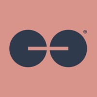

Data Engineer
Ollion
- Accelerated the migration of enterprise applications from AWS to Google Cloud Platform by designing reusable Terraform modules and production-ready Infrastructure as Code (IaC) for scalable cloud provisioning.
- Provisioned secure GCP infrastructure spanning VPC networking, IAM, Cloud SQL, Secret Manager, and Compute Engine using Terraform and SADA modules, reducing manual infrastructure management through automation.
- Improved deployment reliability by automating Kubernetes application delivery on GKE through CI/CD pipelines, container orchestration, and infrastructure validation.
- Improved production visibility by implementing centralized observability with Cloud Monitoring, Logging, dashboards, and alerting, enabling proactive issue detection and faster incident response.